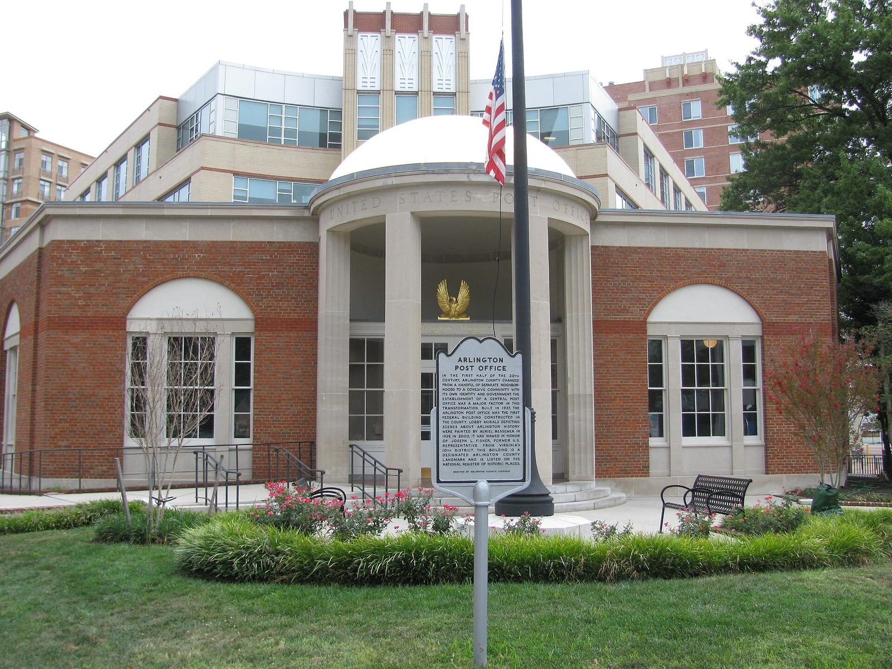
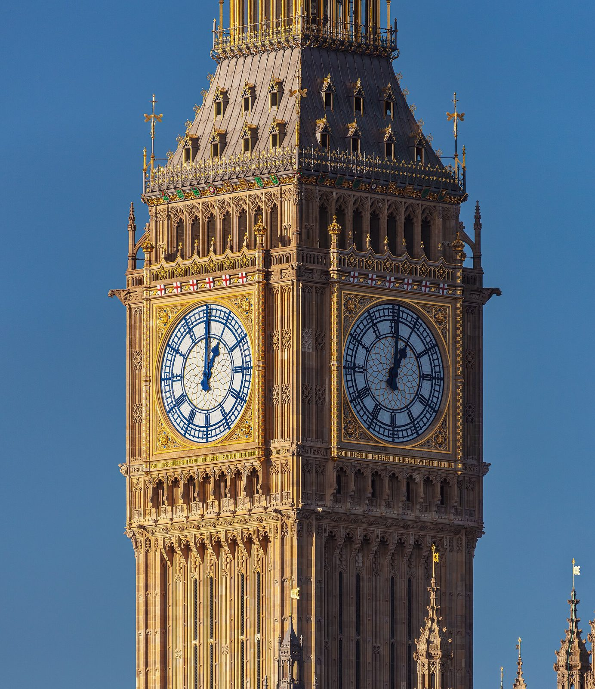
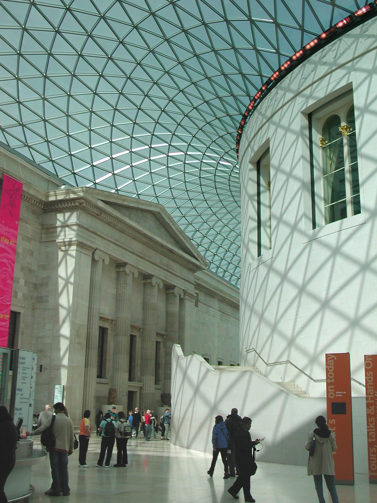
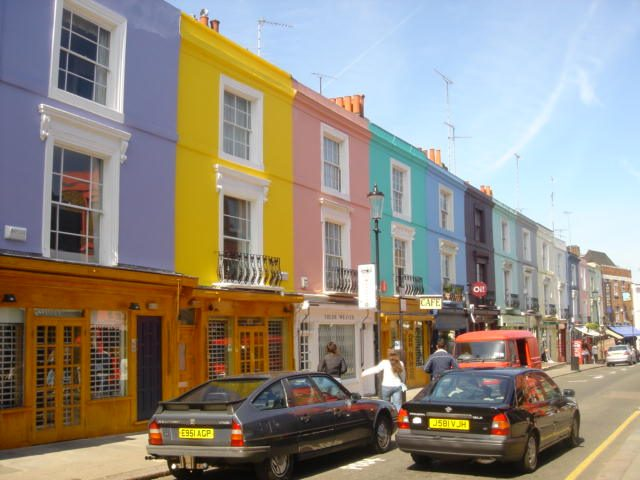
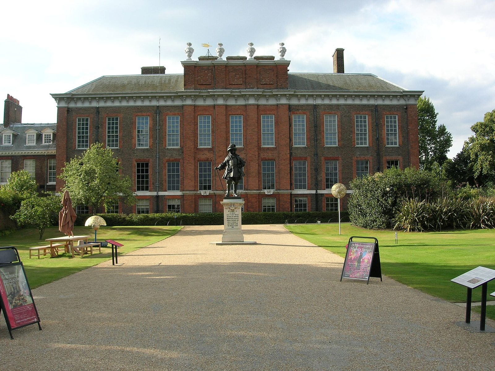
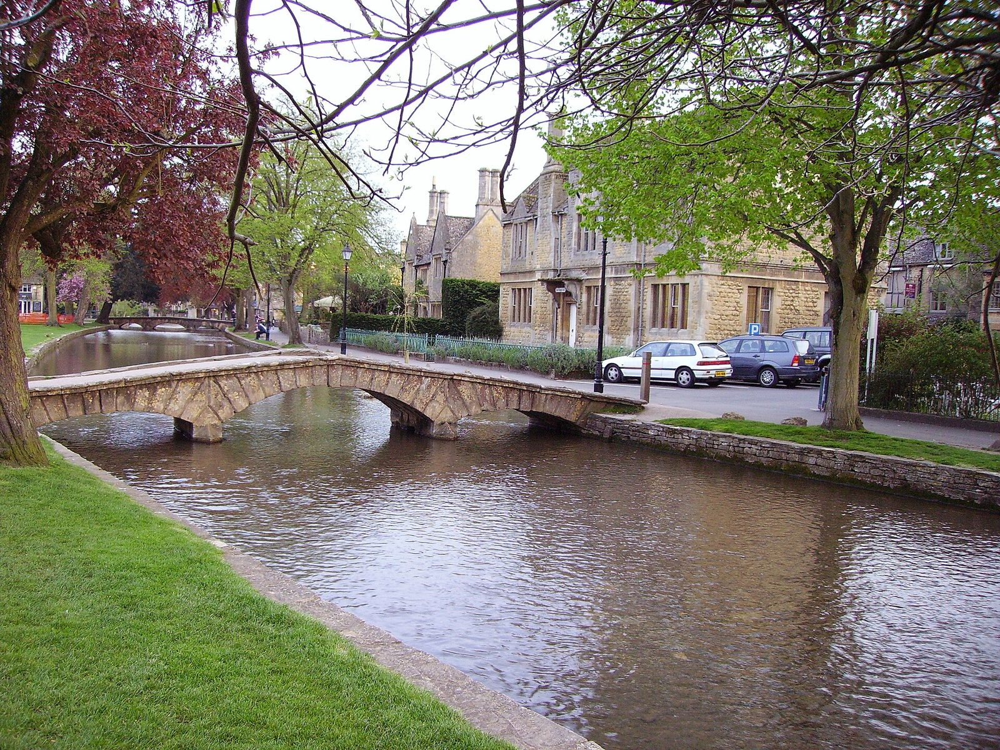

Arrive
Land afternoon, check into your hotel, easy walk around your neighborhood, dinner nearby.
A city honeymoon with a slower pulse than most — theatre, museums, parks, pub dinners, maybe a countryside day trip. Sophisticated rather than romantic-cliché, good if you want culture without heat or crowds.

Shoulder: September–early October (mild, fewer tourists).
Peak: July–August (summer crowds, higher prices).
Comfortable at Portobello-tier lodging plus food, theatre, and a Cotswolds day trip; tight-to-over-budget at Savoy/Claridge's-level for multiple nights.
Damp and cool rather than muggy. Pack layers and a real coat, not just a sweater.
Land afternoon, check into your hotel, easy walk around your neighborhood, dinner nearby.

Westminster Abbey, Big Ben/Parliament, a boat ride on the Thames, evening West End show.
Official tickets: Westminster Abbey ↗ Thames river cruise: City Cruises ↗ Official West End tickets ↗
British Museum or Tate Modern, Borough Market for lunch, Covent Garden in the evening.
Official tickets: British Museum (free) ↗ Borough Market ↗

Portobello Road Market, Kensington Palace/Hyde Park, proper afternoon tea.
Official tickets: Kensington Palace ↗ Afternoon tea: The Ritz ↗
Rent a car or hire a driver to Bibury, Bourton-on-the-Water, and Castle Combe — stone villages, countryside pubs.
Recommended tour: Evan Evans ↗More of the countryside, or head back to London in the evening.
Whatever you missed — another market, a park, a favorite neighborhood revisited.
Fly home.
Iconic Strand address, Thames-side, full splurge.
Mayfair art-deco icon, one of London's most storied hotels.
Eclectic boutique hotel tucked into Notting Hill, quieter but still very central.